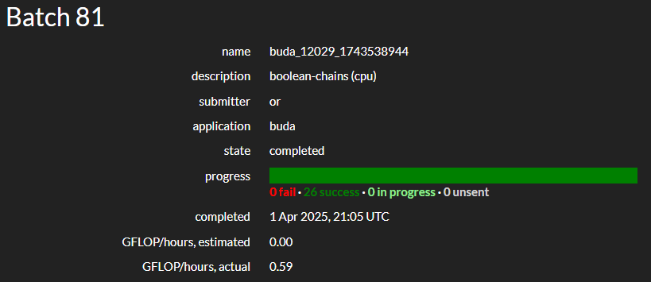

BOINC Development Status Report: March 2025

The first quarter of 2025 is over, and despite the fact that we are a little bit behind the schedule, we are still on track to release the new version of BOINC soon. We took some additional time to finalize the support of the new BUDA functionality, which is a new way of distributing science applications to our users. With the huge help of the LHC@Home Development Project we were able to test the new functionality and fix some bugs that we found during the testing on Linux, MacOS and Windows platforms.
To run the new BUDA applications, our users need to have Docker or Podman installed on their systems. While this is quite easy to do on Linux and MacOS, it requires additional steps on Windows to install WSL (Windows Subsystem for Linux). As we don't want to leave any users behind, we are preparing a detailed guide to assist with the installation process including the custom pre-configured image that has basically one-step installation that could be downloaded from GitHub. The complete guide is already available in the BOINC Wiki. In future we plan to make it even simpler for our Windows users and integrate it into the BOINC installer.
We know that Docker is more known as container technology, for our custom WSL image we chose Podman as as open-source alternative to Docker. Podman is a daemonless container engine for developing, managing, and running OCI containers on your Linux system. It is a drop-in replacement for Docker, which means that you can use the same commands and scripts that you would use with Docker. The main difference is that Podman does not require a daemon to run, which makes it more secure and easier to use in some cases. BOINC client itself detects both Docker and Podman installed, so as always our users have a choice of which one to use.
We plan that this new BUDA applications will replace the current VirtualBox workflow in the future. The biggest advantage of it is the smaller and lighter applications that will not slow-down the host system so much as the current VirtualBox applications do (especially when running more than one instance of VirtualBox).
We also have a first scientist on BOINC Central who is currently testing his application on the platform. We are looking forward to more scientists joining us and testing their applications on the platform.